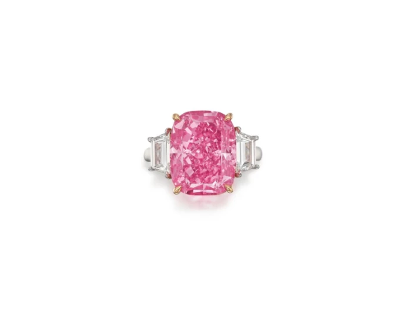
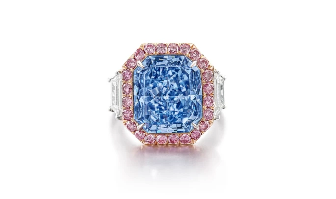
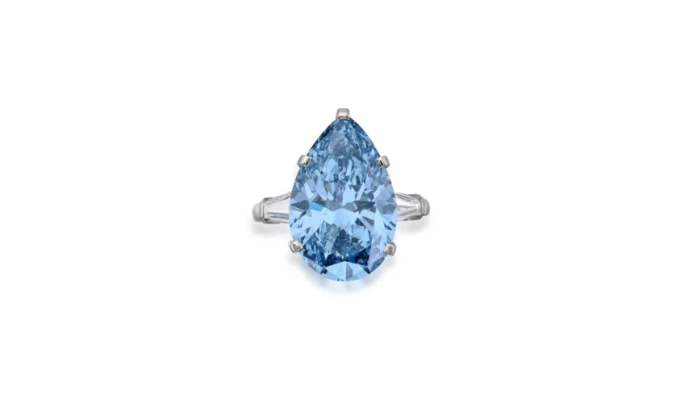
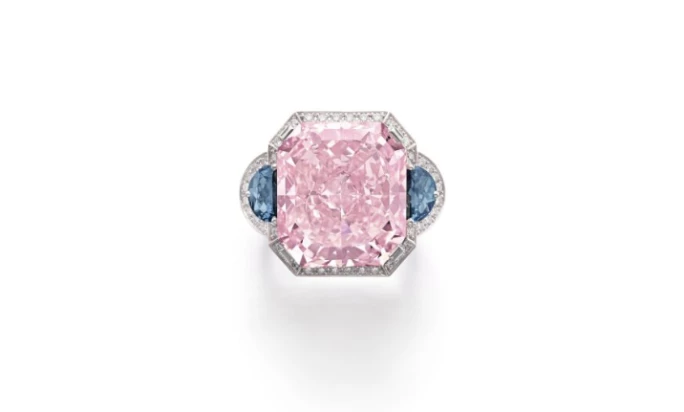
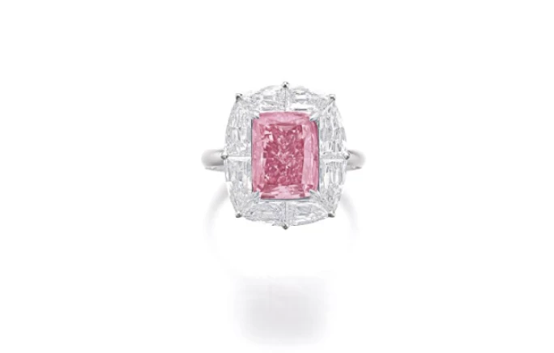

譯自 Lydia Dokko · Sotheby's
細說蘇富比於 2023 年最高成交價的五枚珍稀鑽戒，領略其背後非凡的價值與傳奇。
鑽石簡史
鑽石自古便是珍稀瑰寶，令人傾心。歷史學家考證，早在公元前四世紀，印度已有鑽石貿易。到了 15 世紀，鑽石更成為歐洲貴族炫耀身份的時尚象徵。直至 19 世紀中期，鑽石依然稀若星鳳，僅供少數巨賈賞玩。1866 年，南非金伯利鑽石礦的發現開啟了現代鑽石市場的新紀元。1888 年，塞西爾·羅茲（Cecil Rhodes）創立戴爾比斯礦業公司（De Beers Consolidated Mines Limited），到 1900 年已掌控全球九成鑽石原石產量。1927 年，歐內斯特·奧本海默（Ernest Oppenheimer）接任戴比爾斯董事會主席。面對 1930 年代全球鑽石價格低迷，奧本海默展開了一場延續至今的傳奇營銷：1947 年推出「鑽石恆久遠」的廣告語，成功將鑽石塑造為永恆之愛的象徵。現在，就讓我們一起欣賞 2023 年蘇富比最矚目的五枚天價鑽戒。
1.「紅粉極星」粉紅色鑽石戒指｜34,804,500 美元

「紅粉極星」鑽石戒指
2023 年 6 月，「紅粉極星」以 34,804,500 美元的天價成交。這枚瑰麗的戒指鑲嵌 10.57 克拉的濃彩紫粉紅色鑽石，兩側襯以梯形切割鑽石。作為一顆10克拉天然 IIa 型粉鑽，其內部無瑕的品質尤為珍稀。美國寶石研究院（GIA）特別為其撰寫專函和專題文章，讚譽其為「大自然的瑰麗傑作，經由藝術巧思與匠心淬煉，昇華為稀世珍品」。GIA 更強調，這顆粉鑽的濃郁色澤、完美淨度與碩大體積，在拍賣史上的粉鑽中可謂無出其右。這顆稀世珍寶源自波札那達姆沙礦，由曾打造威廉姆森粉紅之星（Williamson Pink Star）和周大福粉紅之星（CTF Pink Star）等傳奇鑽石的名匠迪亞科爾（Diacore）精心雕琢。他們在紐約花費六個月時間，將 23.78 克拉的原石打磨成混合枕形切割，完美呈現其濃艷色彩與卓越光芒。
2. 艷彩藍色鑽石戒指｜198,220,000 港元

重要非凡的艷彩藍色鑽石戒指
2023 年 10 月，這枚艷彩藍色鑽石戒指以 198,220,000 港元的高價成交，其鑽石戒指鑲嵌著 11.28 克拉的艷彩藍鑽，採用方形切割，周圍環繞明亮式切割鑽石與粉紅色調鑽石，以 18K 白金與玫瑰金精心打造。這顆藍鑽不僅擁有天然豔彩藍色與 VS2 極優淨度，更經鑑定為珍罕的 IIb 型鑽石，附權威證書為證，更見尊貴。
隨戒附上的專題文章與評鑑信函，更彰顯其獨特價值。信中寫道：「『無際之藍』的珍稀，實難以言表。藍鑽在自然界中可謂稀世之寶，而這顆光華絢爛的傳奇鑽石，正是大自然饋贈人類的瑰寶；其靈動光芒，盡顯天工造化之美。」
3. 「Laguna Blu」寶格麗豔彩藍色鑽石戒指｜22,625,100 瑞士法郎

「Laguna Blu」寶格麗豔彩藍色鑽石戒指
2023 年 5 月，這枚寶格麗豔彩藍色鑽石戒指以 22,625,100 瑞士法郎的價格寫下拍賣佳話。又名「Laguna Blu」的 11.16 克拉豔彩藍鑽，呈現天然純淨的湛藍色澤，配以 VS1 極優淨度，更屬珍罕的 IIb 型鑽石，由寶格麗精心打造戒托。寶格麗以精湛工藝與獨特風格著稱，向來鍾情稀世珍寶。這顆藍鑽最初為品牌創始人索蒂里奧·寶格麗（Sotirio Bulgari）之子喬治·寶格麗（Giorgio Bulgari）所得，他也是將彩鑽引入品牌的先驅。其後，這顆瑰寶輾轉落入另一位顯赫藏家之手，直至 2023 年首度現身拍場。
這顆藍鑽色澤濃郁深邃，梨形切割經典優雅，稀世珍罕。2023 年 Met Gala 上，品牌大使琵豔卡·喬普拉·強納斯（Priyanka Chopra Jonas）配戴了以希臘羅馬月桂冠為靈感來定制的寶格麗項鏈，藍鑽鑲嵌其上，璀璨奪目，驚艷全場。
4. 濃彩粉紅色及深彩灰藍色鑽石戒指｜10,377,267 瑞士法郎

濃彩粉紅色及深彩灰藍色鑽石戒指
這枚濃彩粉紅色及深彩灰藍色鑽石戒指，其中以 21.94 克拉的濃彩粉紅色鑽石為主石，巧妙襯以 0.51 克拉與 0.46 克拉深彩灰藍色鑽石的非凡傑作，於 2023 年 5 月以 10,377,267 瑞士法郎成交。這枚20克拉的主石呈天然濃彩粉紅色，淨度達 VVS2，兩側天然灰藍色鑽石分別為 VS2 及 SI1 淨度，盡顯大自然之美。戒托上精心鑲嵌的明亮式切割鑽石，更襯托出粉紅與灰藍的絕妙融合，成就獨一無二的藝術傑作。
5. 豔彩紫粉紅色鑽石戒指｜5,619,900 瑞士法郎

豔彩紫粉紅色鑽石戒指
這枚 5.01 克拉的豔彩紫粉紅鑽戒，於 2023 年 5 月以 5,619,900 瑞士法郎的價格易主。主石呈天然紫粉紅色，VS2 淨度，圓角長方形改良明亮式切割，配以總重約 2.90 克拉的 D 至 F 色、VVS-VS 淨度花式切割與明亮式切割鑽石所打造的精緻戒托，相得益彰，光彩流轉間盡顯高雅氣韻。